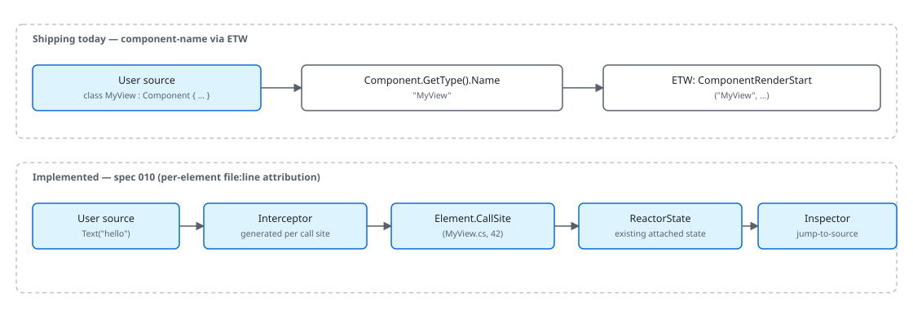

Source Mapping¶
"Source mapping" in Microsoft.UI.Reactor (Reactor) is the chain that ties a runtime artifact —
an ETW event, a --preview overlay highlight, a thrown exception —
back to the C# source that produced it. Two granularities ship today:
component attribution, where every render emits an ETW event carrying
the component's type name, and per-element attribution, where each DSL
call site carries the file and line that produced it. This page covers
both.
Status. Per-element source tagging ships as
Element.CallSiteplusMicrosoft.UI.Reactor.Diagnostics.ReactorSourceMap. There are two independent gates. The build gate decides whether interceptors are generated at all: on by default in Debug, off in Release (an explicit<ReactorSourceMap>true</ReactorSourceMap>does enable it there, and embeds source paths — see below), mirroring how WPF gates XAML source info behindXamlDebuggingInformation. The runtime gate,ReactorSourceMap.Enabled, decides whether those interceptors actually stamp anything, and it defaults to false even in Debug — the devtools verb turns it on, and a host can set it directly or start the process withREACTOR_SOURCEMAP=1. So a plain Debug build generates interceptors but stamps no elements until something enables it. The design reference is spec 010; note that the shipped implementation uses C# interceptors rather than the[CallerFilePath]approach the spec originally proposed, because CallerInfo cannot reach theparams Element?[] childrenfactories.
Component-name attribution via ETW¶
Every ComponentRender boundary emits an ETW event keyed by the
component's CLR type name. The keyword Render gates the events so
consumers can subscribe to just the render channel:
public static class Keywords
{
public const EventKeywords Reconcile = (EventKeywords)0x1;
public const EventKeywords Render = (EventKeywords)0x2;
public const EventKeywords State = (EventKeywords)0x4;
public const EventKeywords Mcp = (EventKeywords)0x8;
public const EventKeywords Lifecycle = (EventKeywords)0x10;
public const EventKeywords Errors = (EventKeywords)0x20;
public const EventKeywords EventDispatch = (EventKeywords)0x40;
// Spec 044 — subsystem coverage gaps. Each gets its own bit so a
// consumer (dotnet-trace, EventListener, ReactorTrace.Subscribe) can
// pick exactly the area it cares about without paying for the rest.
public const EventKeywords Hosting = (EventKeywords)0x80; // Window/HWND/DPI/Backdrop
public const EventKeywords Persistence = (EventKeywords)0x100; // settings store, placement
public const EventKeywords Navigation = (EventKeywords)0x200; // route push, cache, transitions
public const EventKeywords Intl = (EventKeywords)0x400; // missing keys, fallback, format
public const EventKeywords Theme = (EventKeywords)0x800; // theme apply, bindings
public const EventKeywords Shell = (EventKeywords)0x1000; // JumpList/Tray/ThumbnailToolbar
public const EventKeywords HotReload = (EventKeywords)0x2000; // spec 049 — state migration across edits
}
ComponentRenderStart / ComponentRenderStop fire with
componentName = node.Component?.GetType().Name. That string is the
attribution token that flows into PerfView / dotnet-trace /
xperf, and it is the same string devtools-internals
uses to label overlay frames. Per-component, not per-element — but
sufficient for the common question "which component is re-rendering
on every tick".

Reconcile-pass attribution¶
| Signal | Granularity | Where it surfaces |
|---|---|---|
ComponentRenderStart / Stop |
Component CLR type name | ETW Render keyword |
ReconcileStart / Stop |
Root element type + diff counters | ETW Reconcile keyword |
EffectsFlushStart / Stop |
Component CLR type name | ETW Render keyword |
StateChange |
Hook kind + value type | ETW State keyword |
RenderError |
Component name + exception type only (message redacted) | ETW Errors keyword |
| Per-element file:line | Element call site | Element.CallSite / ReactorSourceMap.GetSource (when source mapping is enabled at build time) |
The reconcile pass also emits a counter summary on stop:
[Event(2, Level = EventLevel.Informational, Keywords = Keywords.Reconcile,
Task = Tasks.Reconcile, Opcode = EventOpcode.Stop,
Message = "Reconcile stop (diffed={elementsDiffed}, skipped={elementsSkipped}, created={uiElementsCreated}, modified={uiElementsModified})")]
public void ReconcileStop(int elementsDiffed, int elementsSkipped, int uiElementsCreated, int uiElementsModified)
{
if (IsEnabled(EventLevel.Informational, Keywords.Reconcile))
WriteEvent(2, elementsDiffed, elementsSkipped, uiElementsCreated, uiElementsModified);
}
elementsDiffed / elementsSkipped / uiElementsCreated /
uiElementsModified give a frame-level view of how much actual work
the reconciler did. None of these carry a source location — they're
aggregate counters — but pairing them with the component start/stop
events tells you "this component rendered, the reconciler touched N
elements, and Y of them resulted in real WinUI writes."
Why ETW attribution stops at the component¶
The reconciler resolves mounts through registered descriptors/handlers
before falling back to composition-primitive handlers. The handler that
constructs the WinUI control doesn't know which user line called
TextBlock("hello"):
public abstract class Component
{
// Settable so the reconciler can transfer a live RenderContext (hooks +
// cleanups) onto a freshly-constructed instance when a Hot Reload edit
// mints a new component Type token (spec 049 §7 subtree migration). Outside
// that path the value is the per-instance context created here.
internal RenderContext Context { get; set; } = new();
/// <summary>
/// Override to describe the UI. Use UseState, UseEffect, etc. from the context.
/// Must call hooks in the same order every render.
/// </summary>
public abstract Element Render();
/// <summary>
/// Controls whether this propless component should re-render when its parent re-renders.
/// Default: false — propless components only re-render from their own state changes or context changes.
/// Override and return true to always re-render when the parent re-renders.
/// </summary>
protected internal virtual bool ShouldUpdate() => false;
Component.Render() returns an Element tree the reconciler walks.
The component type name is the coarsest attribution and is always
available because the reconciler has the Component instance in hand;
anything finer requires the element itself to carry a location, which is
what Element.CallSite provides — see the next section.
Per-element source mapping¶
Per-element attribution is produced by a Roslyn interceptor generator
that ships in the Microsoft.UI.Reactor package under buildTransitive/sourcemap,
and is added to your compilation only when ReactorSourceMap is true.
(It deliberately does not live in analyzers/dotnet/cs, where everything
is loaded into every build: this generator inspects every invocation in your
project, so a Release build should not load it at all.) For each DSL factory
call site in your project it
emits an interceptor that calls the real factory and stamps the file and
line onto the returned element. No factory signature changes and no call
site is edited, which is what lets it cover the params Element?[]
children family (VStack, HStack, Grid, …) that [CallerFilePath]
structurally cannot reach.
You do not turn it on. It follows the build configuration by default, the
same way WPF gates XAML source info behind XamlDebuggingInformation:
| Configuration | Interceptors generated (default) | Locations populated |
|---|---|---|
Debug |
yes | when the runtime flag is on (see below) |
Release |
no (unless explicitly opted in) | only if opted in — and then source paths ship in the binary |
These are defaults, not a hard configuration lock: the generator is gated on the
ReactorSourceMap property alone, so an explicit
<ReactorSourceMap>true</ReactorSourceMap> generates interceptors in Release too.
That embeds mapped source paths in the shipped binary, so only opt in for a
Release build you do not distribute — a profiling or diagnostic drop. The reverse
override, <ReactorSourceMap>false</ReactorSourceMap>, turns it off in Debug.
Generation costs roughly 0.5–0.6 ms per intercepted call site; on the Reactor
gallery (1,660 call sites) that is about one second on an incremental rebuild.
A Debug build that never turns the runtime flag on allocates nothing extra
per render: the interceptor checks ReactorSourceMap.Enabled and returns the
original element untouched, measured as byte-identical to a build with no
generator at all on the M12 control-model benchmark. The devtools verb sets that flag for you; a host embedding
its own inspector can set ReactorSourceMap.Enabled directly, and a process that
never goes through the CLI (a benchmark host, a repro) can start with
REACTOR_SOURCEMAP=1 in the environment.
One cost is not zero, and the benchmark above cannot see it. CallSite lives in
the shared ElementExtras bucket, and as a nullable struct it is stored inline, so
it makes that bucket 24 bytes wider — 152 B/instance, measured. Any element carrying
a behavioral extra (attached properties, theme bindings, animations, resource
overrides, context values) allocates that bucket anyway and pays the 24 bytes whether
or not source mapping is on. Elements with no extras, which is the common leaf and
what M12 measures, allocate no bucket and pay nothing. The alternative — declaring
CallSite inline on the record — measured +24 B on every element in every build,
so this is the cheaper of the two.
Read a location back from any realized control:
SourceLocation? src = ReactorSourceMap.GetSource(target);
string label = src is null
? "(no source location)"
: $"{src.Value.ToShortString()}"; // e.g. "MainPage.cs:34"
GetSource walks UIElement -> the element back-pointer the reconciler
already stores -> Element.CallSite. It returns null when the control
was not produced by Reactor, when the assembly was built without source
mapping, or when nothing stamped that element.
Helper methods and [ReactorSourceTransparent]¶
By default a helper is attributed to itself. In
the call site of TextBlock is inside MyHeader, so every caller of MyHeader
collapses onto that one line. That default is deliberate: for most
element-returning methods — a Component.Render() body above all — the body line
is exactly where the author wrote the UI, and deferring it to the caller would be
a regression.
For a thin forwarder, whose own line carries no information anyone wants, mark
it [ReactorSourceTransparent]. This is the helper the source-map explorer
sample uses for its two order rows — click them in the running app and they
report their own distinct call sites, not this helper's body:
/// <summary>
/// A thin forwarder: its own line carries nothing a reader wants, so it is marked
/// source-transparent and each element it returns is attributed to the CALLER's
/// line instead of to the <c>VStack(</c> below.
/// </summary>
/// <remarks>
/// Click the two order rows in the running sample: without the attribute both report
/// this method's body line, because that is genuinely where <c>VStack</c> was called.
/// With it they report the two distinct <c>OrderLine(</c> call sites above.
/// <para>
/// It must be <c>internal</c> rather than <c>private</c> — the generated interceptor
/// lives in another file and has to be able to name it. A <c>private</c> helper here
/// would report <c>REACTOR_SOURCEMAP_001</c> instead of taking effect.
/// </para>
/// </remarks>
[ReactorSourceTransparent]
internal static Element OrderLine(string label, string amount) =>
VStack(
TextBlock(label),
TextBlock(amount).Bold()
).Spacing(2);
Two rules do the work, and they compose. The generator emits no interceptor for DSL calls inside an annotated method, and instead intercepts calls to it, stamping the caller's line. An annotated helper calling another annotated helper therefore keeps deferring outward until it reaches a caller that is not annotated. First-stamp-wins still applies, so a helper that merely passes an element through does not relabel it.
Because rule 1 suppresses stamping for everything inside an annotated method, that includes argument-position stamps (below): a bare-string child written inside a transparent helper is not stamped either, since the element belongs to whoever called the helper.
The annotated method has to be one the generator can emit a forwarding call to:
| Requirement | Why |
|---|---|
static |
Intercepting an instance method needs an extension-method interceptor, a different shape that is not supported |
Returns an Element (including Element?) |
There is nothing else to stamp |
public or internal, never private or protected |
The interceptor lives in a generated file and must be able to name the method |
| An ordinary method — not an operator, accessor, constructor or local function | C# interceptors can only intercept calls to ordinary methods |
No ref / out / in parameters |
The interceptor has to restate the signature and call the original with exactly the arguments it received |
Not declared in a file-local or generic type |
Generated code cannot name the first; interceptors cannot be declared for the second |
An annotation that fails any of these is reported as REACTOR_SOURCEMAP_001
(a warning) rather than silently doing nothing, and attribution falls back to the
helper's own line — so a bad annotation is never worse than no annotation. The
usual #pragma warning disable REACTOR_SOURCEMAP_001 suppresses it if you
annotated a method deliberately knowing it cannot be honoured.
The attribute also works across assemblies: it is read from metadata, so a
library can annotate its own forwarders and consumers get the benefit.
Pending(fallback, child) is annotated this way inside Reactor itself.
Bare strings and other implicit conversions¶
Element declares implicit operator Element(string), so VStack("hi") builds
its child by calling TextBlock inside Reactor's own assembly. That call site
cannot be intercepted — interceptors work on ordinary method calls, never on
operators, and the operator body is already compiled into Reactor.dll.
Instead, the enclosing factory call stamps the converted argument as it passes it through, using the argument expression's own line:
This applies to any implicit user-defined conversion to Element, including ones
your own types declare — not just string. Two limits are worth knowing:
- It only fills in locations nothing else supplies. An argument that already
carries a
CallSite(an explicitly writtenTextBlock("x"), or a conversion whose operator body lives in your compilation and was therefore intercepted) keeps the location it already had. - It applies only to arguments written at the call site.
VStack(myArray)passes an array you own, whose elements were converted where the array was built, so nothing is stamped and your array is never written to.
Known limitations¶
- Unannotated helper methods attribute to themselves. A helper
MyHeader()that callsTextBlock(...)reports the line insideMyHeader, not the line that called it — interceptors replace the call site, and that is the call site. Mark a thin forwarder[ReactorSourceTransparent](above) to defer to the caller, or wrap reusable UI in a named component. - Wrapped third-party controls are not stamped. A factory generated by
[GenerateReactorWrapper]lives on the element type (MyControlElement.MyControl(...)), not onFactories, and is invisible to the source-map generator: Roslyn runs every source generator against the same input compilation, so one generator cannot see another's output. Those elements reportnullrather than a wrong line. If you need a location for a wrapped control, call it from a named component and use the component's identity. - Unannotated entry points outside
Factoriesare not stamped. A few element-producing APIs live elsewhere —PropertyGridDefaults's templates andintl.RichMessage(...)(IntlAccessor) are built-in examples. They build their element by callingFactoriesfrom inside Reactor's own assembly, where there is no call site in your compilation to intercept, so the element they return reportsnull. The elements you pass into them are ordinary call sites and are stamped normally. A static forwarder in this position can opt in with[ReactorSourceTransparent], which is whatPending(fallback, child)does;intl.RichMessagecannot, because it is an instance method.
Tips¶
For now, lean on the component name. Wrap chunks of UI in
purpose-named components — <UserCard>, <RegisterForm>,
<NotificationBadge> — and the ETW events will identify them.
Inline anonymous Func-component lambdas show up as
FuncElement in traces, which is almost never what you want.
RenderError redacts the message on purpose. TASK-064 strips
ex.Message from the ETW payload because exception messages can
carry absolute paths, env values, and form values. Apps that want
richer diagnostics should log through their own pipeline (ETL/disk
under their own ACL) rather than the Microsoft-UI-Reactor provider.
PerfView gives you the full sequence. Microsoft-UI-Reactor is a
managed EventSource, so it surfaces on both EventPipe
(dotnet-trace) and classic ETW (PerfView / xperf / WPA). When you
need to correlate Reactor renders with native WinUI events
(Microsoft-Windows-XAML), only ETW carries both — EventPipe doesn't
flow native providers.
Watch the design before designing around it. Spec 010 owns the per-element story and several Phase 4 surfaces (preview inspector, reconcile-highlight) wait on it. Don't fork a parallel attribution scheme; track the spec.
Next Steps¶
- Devtools internals — Where the preview inspector will consume
SourceLocationonce it lands. - Perf instrumentation — Same ETW pipeline, focused on the timing axis.
- Architecture overview — How the render-loop produces the events documented here.
- Spec 010 — Source mapping design — The full design reference.